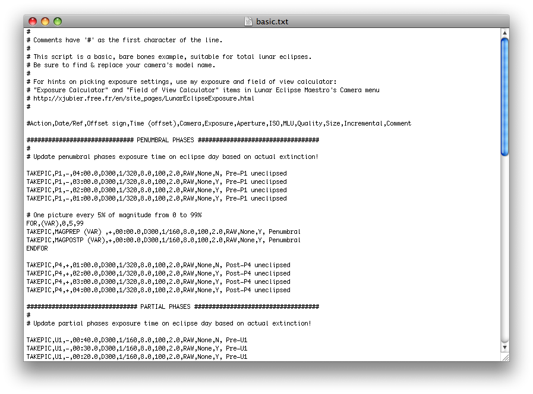

Fenêtre Création d’un Script
Pour créer un script vous pouvez utiliser n’importe quel éditeur de texte comme TextEdit, TextWrangler ou BBEdit. Un script est un fichier texte qui précise à l’application à quel instant et avec quels réglages d’exposition elle doit prendre une photo.
-
Dans le menu Fichier sélectionnez Nouveau script (⌘N) pour créer un script en utilisant TextEdit, ou alors Ouvrir script… (⌘O) et réutiliser un script existant que vous pouvez ensuite modifier.

-
Pour débuter choisissez un des scripts fournis par défaut avec Lunar Eclipse Maestro. basic.txt est un script très simple pour vous aider au départ. deluxe.txt vous montre toutes les fonctionnalités disponibles dans le language de script. Votre script sera probablement à mi-chemin entre les deux. L’éditeur TextEdit, ou celui que vous avez sélectionné dans la fenêtre des préférences de l’application, se lancera très probablement avec votre script. Parcourez le fichier. Si une ligne du script débute avec le caractère #, alors cette ligne est un commentaire qui sera ignoré. Autrement les informations présentes sur chaque ligne sont séparées par des virgules. La première chose à faire est de mettre à jour les noms des APN en les remplaçant par ceux que vous avez utilisé dans le dialogue de Configuration Matérielle. Faites une recherche/remplacement de D300 vers le nom que vous avez donné à votre APN. Ce nom doit être ABSOLUMENT identique au nom donné dans le dialogue de Configuration Matérielle. Une autre chose qui doit ABSOLUMENT être identique est la qualité d’image, aussi n’oubliez pas de consulter les propriétés disponibles pour vos appareils numériques en sélectionnant Propriétés disponibles… dans le menu APN. Commencez à adapter le script pour répondre à vos besoins. Quand vous avez terminé, n’oubliez pas d’enregistrer votre script.
Vérifiez bien la syntaxe des scripts pour ne pas faire d’erreur.
N’hésitez pas à utiliser la calculatrice de l’exposition et l’analyseur de séquence de prises de vue pour vous faciliter le travail.
-
De retour dans Lunar Eclipse Maestro, allez dans le menu Fichier et sélectionnez Charger script… (⌘L) puis choisissez le script que vous venez d’éditer. Si des messages d’erreur s’affichent, essayez de corriger les erreurs en modifiant le script avant de le charger de nouveau. Une fois qu’il n’y a plus d’erreur, vous apercevrez la liste de toutes les actions à venir.
|